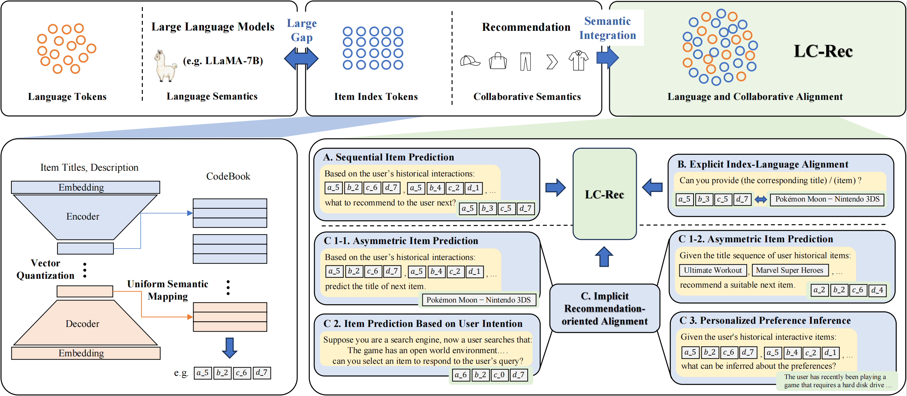
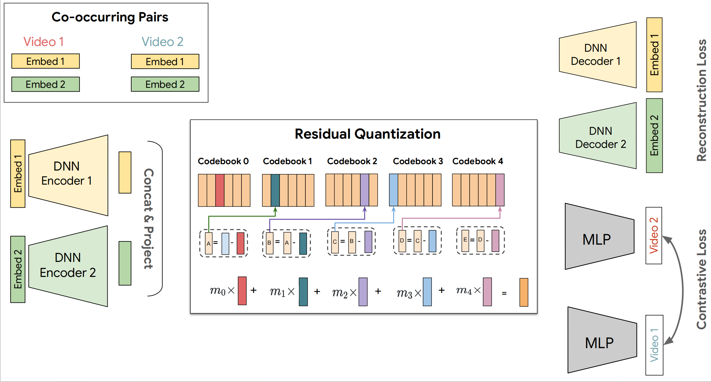
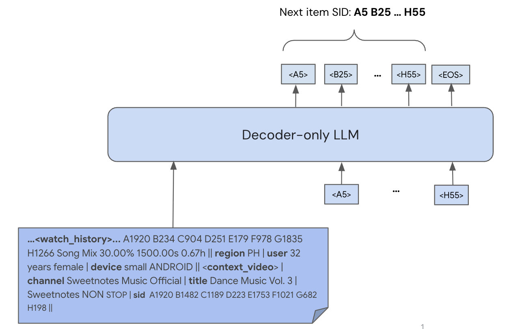

8.1. 协同语义与语言语义的统一¶
推荐系统与大语言模型之间存在一道巨大的“语义鸿沟”：推荐系统依赖用户行为数据构建的协同语义(collaborative semantics)，而LLM理解的是文本中的语言语义(language semantics)。传统推荐系统将每个物品表示为一个离散的ID(如item_12345)，这个ID本身不携带任何语义信息，它的表示能力完全来自于用户行为数据中学习到的协同模式。通过分析用户-物品交互矩阵，推荐模型能够捕捉物品之间隐含的相似性和关联性，这种通过行为数据学习到的物品表示，我们称之为协同语义。
而大语言模型理解的是语言语义，它通过预训练学习到词汇、短语、句子之间的语义关联。当我们直接将物品ID输入给LLM时，这些离散标识符对LLM而言是词汇表外(Out-of-Vocabulary)的符号，无法与其预训练知识产生关联。一种直观的解决方案是用物品标题替换ID，然而这种方法存在两个根本性问题：第一，LLM虽然能理解标题的字面含义，但无法感知该物品在推荐系统中的协同特征，即用户群体的集体行为模式；第二，基于候选集的文本生成方式无法扩展到全库检索场景，限制了模型的应用范围。因此，如何构建一种既能被LLM理解，又能承载协同语义的物品表示，成为亟待解决的核心问题。
LC-Rec(Language-Collaborative Recommendation) (Zheng et al., 2024) 提出了一套系统性的解决方案，其核心思想是为每个物品学习一组离散的语义索引(Semantic Index)，使其同时具备语言可理解性和协同表达能力。该方法包含两个关键技术模块：物品索引学习和语义对齐训练。
8.1.1. 物品索引学习¶
在前面第五章中，我们已经详细介绍了语义ID的生成方法，包括VQ-VAE的基本原理、RQ-VAE的残差量化机制、以及RQ-Kmeans等工业级方案。LC-Rec延续了这一技术路线，采用层次化的残差向量量化(Residual Vector Quantization, RQ)方法构建物品索引。
具体而言，LC-Rec首先利用LLM对物品的标题和描述进行编码，获得初始的文本嵌入表示 \(\mathbf{e} \in \mathbb{R}^d\)，这一步保证了索引构建的起点是基于语言语义的。然后训练一个RQ-VAE模型，将连续的嵌入向量映射为离散索引序列。编码器将 \(\mathbf{e}\) 映射为潜在表示 \(\mathbf{z}\)，随后进行 \(H\) 层残差量化。在第 \(i\) 层，码本 \(C^i = \{\mathbf{v}^i_k\}_{k=1}^K\) 包含 \(K\) 个可学习的聚类中心，量化过程为：
其中 \(c_i\) 为第 \(i\) 层选择的码本索引，\(\mathbf{r}_i\)
为该层的残差向量。最终，物品被表示为索引序列
\([c_1, c_2, ..., c_H]\)，例如 <a_5><b_2><c_6><d_7>。
这种层次化设计带来两个重要特性：语义的逐层细化和相似物品的索引前缀共享。从第一层到第 \(H\) 层，索引逐渐从粗粒度的类别信息细化到精细的个体特征。由于索引由物品的语义向量学习而来，内容相似的物品会倾向于共享更多的前缀索引，这为后续的自回归生成提供了结构化的先验知识。
{kind=link}

图8.1.1 LC-Rec模型架构¶
LC-Rec相较于前面介绍的方法，其关键创新在于均匀语义映射(Uniform Semantic Mapping)机制。标准的向量量化方法存在索引冲突问题：多个不同物品可能被映射到相同的索引序列。在推荐系统中，这是不可接受的，每个物品必须有唯一标识。现有方法(如TIGER)通常通过增加额外的索引层来解决冲突，但这会引入语义无关的噪声，影响模型对索引语义的理解。
LC-Rec提出的均匀语义映射方法从根源上缓解这一问题。其核心思想是在最后一层量化时引入均匀分布约束，确保物品在码本向量上的分配尽可能均衡。形式化地，该问题被建模为最优传输问题：
其中 \(\mathcal{B}\) 为一个批次的残差向量，\(q(c_H=k|\mathbf{r}_H)\) 表示将残差 \(\mathbf{r}_H\) 分配给第 \(k\) 个码本向量的概率。该优化问题通过Sinkhorn-Knopp算法求解。这种方法在保持语义连续性的同时，显著降低了索引冲突率，使得模型可以在不增加额外索引层的情况下，为绝大多数物品分配唯一的语义ID。
8.1.2. 语义对齐训练¶
获得物品索引后，需要通过指令微调(Instruction Tuning)让LLM理解这些索引的含义，并能在推荐任务中灵活运用。然而，由于语义鸿沟的存在，简单地在目标推荐任务上微调是不够的，LLM难以将这些本质上是OOV tokens的索引与其背后的协同信号和语言内容建立有效关联。LC-Rec设计了三个层次的对齐任务，逐步将协同语义注入LLM。
序列物品预测作为最基础的训练任务，给定用户历史交互物品的索引序列，预测下一个物品的索引。该任务让LLM学习索引序列中的协同模式。由于索引本身具有层次结构，LLM在自回归生成过程中可以逐层细化预测，先预测粗粒度的类别索引，再逐步生成精细的个体索引。这种由粗到细的生成过程与LLM的文本生成机制天然契合，例如：
Instruction: Here are the user's historical interactions:
<a_124><b_192><c_41><d_17>, ..., <a_82><b_59><c_191><d_66>,
try to recommend another item to the user.
Response: <a_112><b_32><c_5><d_175>
显式索引-语言对齐旨在让LLM明确理解索引与物品内容之间的对应关系。虽然索引基于物品的文本嵌入构建，但它们仅通过共享前缀建立了弱关联，每个索引本身并不直接携带语言语义信息。为此，LC-Rec设计了两类互逆的对齐任务：
索引到文本的映射：给定物品索引，生成对应的标题和描述。这让LLM建立“索引→语义内容”的关联。例如，看到
<a_66><b_197><c_236><d_223> 能够生成“Pokémon Moon - Nintendo
3DS”及其详细描述。
文本到索引的映射：给定物品的标题和描述，生成对应的索引序列。这建立反向的“语义内容→索引”映射。通过物品的文本信息，模型需要推断出其对应的层次化索引表示。
这种双向对齐类似于多模态学习中的交叉重建任务，通过互相预测在两种表示之间建立紧密的语义桥梁。实验表明，经过这类任务训练后，LLM能够准确识别索引对应的物品，也能根据物品描述生成正确的索引。
推荐导向的隐式对齐进一步强化协同语义的融合。前两类任务主要建立了索引与语言语义的显式对应，但协同语义的深度整合仍需加强。LC-Rec设计了三类更具挑战性的任务：
非对称预测任务：打破“输入输出均为索引”的对称模式。例如，输入索引序列
<a_38><b_94>...，输出物品标题“NBA 2K16 - PlayStation
4”；或输入标题序列，输出索引。这类任务迫使LLM在索引的协同模式和文本的语义内容之间建立深层关联，而不是简单地记忆索引序列的统计规律。
基于意图的物品预测：从用户评论中提取意图描述(如“寻找开放世界的多人冒险游戏”)，让模型预测推荐的物品索引。或结合历史交互索引和意图描述进行个性化推荐。这类任务让模型学会将自然语言需求与协同过滤模式结合，例如：
Instruction: Suppose you are a search engine, now a user
searches that: "The game has an open world environment...",
can you select an item to respond to the user's query?
Response: <a_104><b_4><c_47><d_182>
(Grand Theft Auto Vice City Stories)
个性化偏好推理：给定用户交互索引序列，生成对用户偏好的自然语言总结。这不仅训练了推理能力，也为可解释推荐提供了基础。与InstructRec等方法不同，LC-Rec基于索引序列而非标题序列进行偏好推理，这要求模型深度理解索引中编码的协同语义和语言语义。
通过上述三层对齐训练，协同语义和语言语义在LLM内部形成了统一的表示空间。该空间具有以下特性：
层次化的语义组织：实验分析表明，当逐层增加索引长度时，LLM生成的物品描述会从粗粒度类别逐渐收敛到精确物品。例如，给定
<a_66> 可能生成“Nintendo游戏”，而 <a_66><b_197><c_236>
则收敛到“Pokémon系列 - Nintendo
3DS”，这验证了索引的层次结构被LLM内化为语义的层次组织。
协同-语言语义的融合：在物品相似度任务中，基于索引生成的推荐结果(整合了协同语义)比基于纯文本相似度的结果更符合推荐场景。例如，对于某款PlayStation游戏，纯文本检索可能返回同名但不同平台的版本，而基于索引的生成会推荐同类型、同平台的其他游戏，体现出协同行为模式的影响。
生成式全库检索能力：由于索引数量远小于物品总数(4层×256码本 vs 百万级物品)，且索引已被纳入LLM词汇表，模型可以直接通过自回归生成完成全库检索，无需依赖候选集。这在实验中表现为显著优于基于候选集的基线方法(如TALLRec、InstructRec)。
LC-Rec通过物品索引学习和多层次语义对齐，系统性地解决了LLM与推荐系统之间的语义鸿沟问题。其核心贡献在于构建了一种同时承载语言语义和协同语义的物品表示，并通过渐进式的训练任务让LLM深度理解这种表示。这为后续基于LLM的推荐推理能力奠定了基础：当模型能够自如地在两种语义之间切换时，才具备进行复杂推理的前提。
8.1.3. 工业级语义对齐：PLUM框架¶
LC-Rec在学术数据集上验证了可行性，但从学术到工业仍有巨大鸿沟。YouTube平台每天产生数百万新视频和数十亿用户交互，面临着多模态内容融合、实时增量更新、十亿级规模检索等挑战。Google DeepMind与YouTube团队推出的PLUM(Pre-trained Language Models for Recommendations) (He et al., 2025) 框架正是为应对这些挑战而生，它通过三个递进阶段（增强型语义ID构建、领域持续预训练、生成式检索微调）实现了工业级规模的语义对齐。
8.1.3.1. 多模态与协同信号的融合¶
LC-Rec仅使用文本嵌入构建语义ID，但视频内容的丰富性远超纯文本，一个游戏直播的吸引力可能更多来自主播的声音特质和游戏画面的流畅度，而非标题中的文字。PLUM认识到，真正的协同语义不仅来自用户对文本描述的偏好，更来自用户对多模态内容整体的感知。
PLUM采用多模态嵌入拼接策略来融合异构信息。每个视频通过三个独立的预训练编码器处理：
文本编码器处理标题、描述、自动字幕(ASR)，提取\(\mathbf{e}_{\text{text}} \in \mathbb{R}^{d_t}\)
视觉编码器从关键帧中提取视觉特征\(\mathbf{e}_{\text{visual}} \in \mathbb{R}^{d_v}\)
音频编码器从声音轨道中提取音频特征\(\mathbf{e}_{\text{audio}} \in \mathbb{R}^{d_a}\)
这三个嵌入向量通过简单拼接形成综合表示：
相比复杂的注意力融合机制，拼接策略给予不同模态平等的表达机会，让RQ-VAE的码本学习过程自然发现哪种模态对区分视频类别最重要。实验表明，对于音乐视频，码本更多依赖音频特征；对于教程视频，文本特征权重更高；而对于游戏视频，视觉特征成为主导。
更关键的是，PLUM通过显式引入协同过滤嵌入来弥补内容语义的不足。两个在内容上相似的视频，比如两个都是关于“Python教程”的视频，可能因为讲解风格、难度设置、受众群体的不同，在推荐系统中扮演完全不同的角色。PLUM从用户-视频交互图中，通过图神经网络或矩阵分解学习每个视频的协同嵌入\(\mathbf{e}_{\text{cf}} \in \mathbb{R}^{d_c}\)，编码“哪些用户倾向于一起观看这个视频和其他哪些视频”的协同模式，然后将其与内容嵌入拼接：
{kind=link}

图8.1.2 PLUM语义ID模型架构¶
这个设计使得语义ID不再是纯粹的内容标识，而是融合了“内容是什么”和“用户如何感知”的双重语义。当RQ-VAE对\(\mathbf{e}_{\text{final}}\)进行量化时，它学到的码本不仅是内容的聚类，更是内容-行为联合空间的聚类。
为保证语义在层次化索引中被正确组织，PLUM引入两项技术。第一项是多分辨率码本：不同层使用不同大小的码本（第1层128个，第2层256个，第3层512个，第4层1024个），符合从粗粒度到精细区分的信息论原理。第二项是渐进式掩码训练，除了要求解码器根据完整索引重建原始嵌入，PLUM还引入部分掩码的重建任务：
这强制每一层的索引都携带增量语义信息，确保语义ID展现出清晰的层次结构：第1层区分大类别（游戏、音乐、新闻），第2层区分子类别（FPS游戏、流行音乐），第3-4层逐步细化到具体视频。
8.1.3.2. 持续预训练：建立协同-语言的双向映射¶
即使拥有了融合多模态内容和协同信号的语义ID，LLM仍然不知道这些ID“意味着什么”。PLUM的持续预训练(CPT)阶段正是为了在LLM内部建立语义ID与自然语言之间的双向映射，让模型既能“看到ID想到内容”，也能“看到内容想到ID”。
CPT首先将所有语义ID token加入LLM词表。PLUM使用4层RQ-VAE，每层256个码本，需要新增1024个特殊token。关键是如何初始化这些新token的嵌入向量。PLUM采用语义引导初始化策略：对于每个码本向量\(\mathbf{v}_k^i\)（它代表了被聚类到该中心的所有视频的“平均内容”），找到距离它最近的若干个视频，提取这些视频标题的LLM嵌入，用它们的均值来初始化对应的语义ID token嵌入。这个设计在训练开始前就为语义ID token赋予了与其代表的语义内容相关的初始位置，为后续的语义对齐提供了有意义的起点。
PLUM精心设计了三类训练数据，每类数据都对应语义对齐的一个维度：
纯语义ID序列：从用户观看历史中采样行为序列，将每个视频替换为其4层语义ID。模型的任务是预测序列中的下一个ID：
这类数据让模型学习纯粹的协同模式，即哪些视频经常被连续观看，哪些ID组合代表特定的兴趣链条。
纯领域文本数据：包括视频标题、描述、评论、字幕等YouTube平台的所有文本内容。训练目标是标准语言建模：
这类数据的作用不仅是防止模型在大量非文本token上训练后产生语言能力退化，更重要的是让模型学习领域语言的表达方式。YouTube的视频标题有其独特的语言风格，如“【中文字幕】”、“Part 3”、“超详细教程”这些表达在通用语料中很少见，但在推荐场景中频繁出现。
ID-文本交错序列：这是语义对齐的核心数据类型。PLUM构建了多种交错模式：
ID→文本: 视频 <A1991><B5><C2><H10> 的标题是: 健康管理：如何应对慢性疼痛
文本→ID: 标题为 "我的世界建筑教程：中世纪城堡" 的视频ID是 <A37><B12><C5><D8>
序列+描述: 用户观看了 <A37><B12><C5><D8> (Minecraft建筑教程), 然后观看了 <A37><B12><C9><D2> (Minecraft红石电路)
这些交错序列在LLM内部建立了语义ID↔自然语言的双向桥梁。当模型在大量配对上训练后，它内部的注意力机制会自动学会：看到ID前缀时激活相关的语义神经元，生成ID时根据文本内容选择合适的码本索引。
三类数据的黄金配比为：50%用户行为数据（纯ID序列），50%视频元数据语料（领域文本+ID-文本交错）。在视频元数据语料内部，ID-文本交错序列占比约60-70%。这个配比确保了协同语义和语言语义被平等对待，且两个子空间能够逐渐融合为统一的语义空间。
持续预训练的一个收获是模型展现出零样本跨模态理解能力。当逐层增加ID长度时，模型的描述会从宽泛逐步聚焦：
<A37> → "任天堂相关内容"
<A37><B12> → "任天堂Switch游戏"
<A37><B12><C5> → "塞尔达传说系列"
<A37><B12><C5><D8> → "塞尔达传说旷野之息武器收集攻略"
这种零样本能力证明了语义对齐已经内化为模型的表示结构。模型没有显式地被告知“第1层索引代表大类别，第2层代表子类别”，但它通过大量交错序列训练，自动学会了这种层次语义的对应关系。
8.1.3.3. 任务微调与生产验证¶
持续预训练建立了协同语义与语言语义的统一表示空间，但模型还需要针对具体的推荐目标进行优化。PLUM的任务微调阶段将推荐重新定义为条件生成任务：给定用户的多模态上下文（历史观看的语义ID序列、文本特征、数值特征），自回归生成推荐视频的语义ID。
{kind=link}

图8.1.3 PLUM生成式检索架构¶
任务微调通过两个方式激活和强化CPT阶段建立的对齐关系：
异构输入的统一编码：不同于传统推荐模型将所有特征压缩为固定维度向量，PLUM充分利用LLM处理异构序列的能力。一个完整的输入提示包含：
用户在 周六晚上8点 通过 手机 观看:
<A124><B192><C41><D17> (完播率: 高),
<A82><B59><C191><D66> (完播率: 中),
请推荐下一个视频。
这个提示混合了三种模态：语义ID（协同信号）、自然语言（时间、设备等上下文）、离散化数值（完播率转换为“高/中/低”token）。LLM的自注意力机制会自动学习这三种模态之间的交互模式，例如，“周六晚上”可能与娱乐类视频的协同模式更相关，“手机”设备可能与短视频的ID序列更匹配。
奖励加权的对齐强化：并非所有用户行为都同等重要。一次完整观看并点赞的互动，其价值远高于仅停留3秒的点击。PLUM引入奖励函数\(r(u,v)\)来区分不同质量的交互：
从语义对齐的角度看，这个加权机制是在告诉模型：高奖励的交互（长时观看、点赞、分享）代表了“强语义关联”，值得被深度编码到模型的语义空间中；低奖励的交互（误点、快速退出）可能是噪声，不应过度拟合。
PLUM最终在YouTube的长视频和短视频推荐中全面上线，服务数十亿用户。其性能提升体现在多个维度：
ID唯一性与覆盖率：经过多分辨率码本和渐进式掩码训练，PLUM的语义ID达到96.7%的唯一性（相比LC-Rec基础方法的94.0%），这意味着绝大多数视频拥有独一无二的语义标识，减少了ID冲突带来的语义歧义。同时，有效词汇量（覆盖95%曝光所需的视频数）在长视频上提升2.6倍，在短视频上提升13.2倍，这表明模型学到的语义空间具有更好的区分度，能够精准定位长尾内容。
协同-语言双向对齐的涌现：在零样本测试中，PLUM展现出双向理解能力。给定ID前缀，模型能够生成准确的内容描述，且描述的粒度随ID层数增加而细化；给定内容描述，模型能够生成合理的ID序列。这种能力完全是通过大量ID-文本交错序列的隐式学习涌现出来的，证明了协同语义和语言语义在LLM内部确实形成了统一的表示空间。
样本效率的显著提升：虽然PLUM的神经网络参数是传统大嵌入表模型(LEM)的100倍，但由于语义对齐带来的样本效率提升，PLUM在推荐任务上的训练数据需求远低于LEM。LEM每天需要数十亿训练样本才能收敛，而PLUM的900M MoE模型仅需2.5亿样本。总训练成本(FLOPs)仅为LEM的0.55倍。这种效率提升的根源在于：对齐后的语义空间具有更好的泛化能力，模型不再需要通过海量数据“记忆”每个物品的嵌入，而是通过理解语义ID的层次结构和协同模式，实现小样本甚至零样本推广。
PLUM的成功标志着协同语义与语言语义统一从学术原型走向工业落地。它证明了即使在十亿级规模、多模态内容、实时推理的严苛约束下，通过精心设计的语义ID构建、持续预训练、任务微调流程，LLM完全能够深度理解推荐系统中的“协同语言”，并将这种理解转化为强大的推荐能力。然而，PLUM仍然是一个端到端的生成模型，它能够高效生成高质量推荐，却无法解释为什么推荐这些内容。当模型已经“认识”了物品、“理解”了用户，下一个自然的问题是：如何让它学会“思考”推荐的理由，并将这种思考过程显式地展现出来？